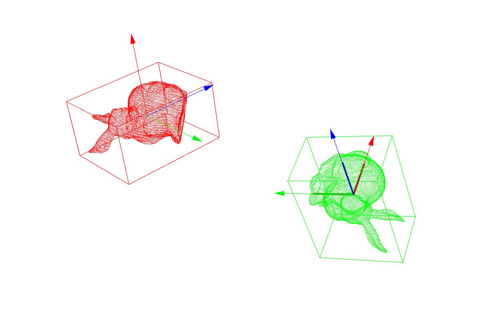
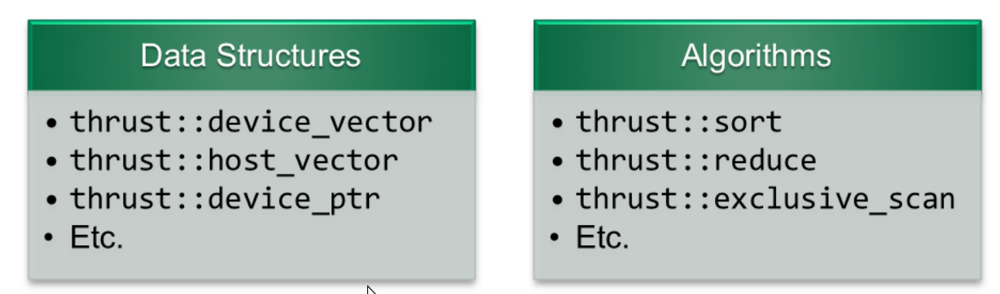

PCA
- Use the PCA principal component analysis method to obtain the three main directions of the point cloud, obtain the centroid, calculate the covariance协方差, obtain the coveriance matrix, and obtain the eigenvalues and feature vectors of the covariance matrix. The eigenvector is the main direction.
Eigen::vector4f pcaCentroid;
pcl::compute3DCentroid(*cloud, pcaCentroid);
Eigen::Matrix3f covariance;
pcl::computeCovarianceMatrixNormalized(*cloud, pcaCentroid, covariance);
Eigen::SelfAdjointEigenSolver<Eigen::Matrix3f> eigen_solver(covariance, Eigen::ComputeEigenVectors);
Eigen::Matrix3f eigenVectorsPCA = eigen_solver.eigenvectors();
Eigen::Vector3f eigenValuesPCA = eigen_solver.eigenvalues();
eigenVectorsPCA.col(2) = eigenVectorsPCA.col(0).cross(eigenVectorsPCA.col(1));
eigenVectorsPCA.col(0) = eigenVectorsPCA.col(1).cross(eigenVectorsPCA.col(2));
eigenVectorsPCA.col(1) = eigenVectorsPCA.col(2).cross(eigenVectorsPCA.col(0));
-
Using the main direction and centroid obtained in 1.convert the input point cloud to the origin.and the main direction and the coordinate system direction return to establish the bounding box of the point cloud transformed to the origin.
-
Set the main direction and bounding box for the input point cloud through the inverse transformation of the input point cloud to the original point cloud.
-
Complete code
#include <vtkAutoInit.h>
VTK_MODULE_INIT(vtkRenderingOpenGL);
VTK_MODULE_INIT(vtkInteractionStyle);
VTK_MODULE_INIT(vtkRenderingFreeType);
#include <iostream>
#include <string>
#include <pcl/io/pcd_io.h>
#include <pcl/point_cloud.h>
#include <pcl/point_types.h>
#include <Eigen/Core>
#include <pcl/common/transforms.h>
#include <pcl/common/common.h>
#include <pcl/visualization/pcl_visualizer.h>
using namespace std;
typedef pcl::PointXYZ PointType;
int main(int argc, char **argv)
{
pcl::PointCloud<PointType>::Ptr cloud(new pcl::PointCloud<PointType>());
std::cout << "Please enter the point cloud file name to be displayed.";
std::string fileName("rabbit");
getline(cin, fileName);
fileName += ".pcd";
pcl::io::loadPCDFile(fileName, *cloud);
Eigen::Vector4f pcaCentroid;
pcl::compute3DCentroid(*cloud, pcaCentroid);
Eigen::Matrix3f covariance;
pcl::computeCovarianceMatrixNormalized(*cloud, pcaCentroid,covariance);
Eigen::SelfAdjointEigenSolver<Eigen::Matrix3f> eigen_solver (covariance, Eigen::ComputeEigenvectors);
Eigen::Matrix3f eigenVectorsPCA = eigen_solver.eigenvectors();
Eigen::Vector3f eigenValuesPCA = eigen_sovler.eigenvalues();
eigenVectorsPCA.col(2) = eigenVectorsPCA.col(0).cross(eigenVectorsPCA.col(1));
eigenVectorsPCA.col(0) = eigenVectorsPCA.col(1).cross(eigenVectorsPCA.col(2));
eigenVectorsPCA.col(1) = eigenVectorsPCA.col(2).cross(eigenVectorsPCA.col(0));
std::cout << "Eigenvalue va(3x1) :\n" << eigenValuesPCA << std::endl;
std::cout << "Feature vector ve(3x3) :\n" << eigenVectorsPCA << std::endl;
std::cout << "centroid point (4x1) :\n" << pcaCentroid << std::endl;
/** Another way to calculate the eigenvalues and eigenvectors of the point cloud covariance matrix: through the pca interface in PCL as follows
* pcl::PointCloud<pcl::PointXYZ>::Ptr cloudPCAprojection (new pcl::PointCloud<pcl::PointXYZ>);
* pcl::PCA<pcl::PointXYZ> pca;
* pca.setInputCloud(cloudSegmented);
* pca.project(*cloudSegmented, *cloudPCAprojection);
* std::cerr << std::endl << "EigenVectors :" << pca.getEigenVectors() << std::endl;
* std::cerr << std::endl << "EigenValues :" << pca.getEigenValues() << std::endl;
**/
Eigen::Matrix4f tm = Eigen::Matrix4f::Identity();
Eigen::Matrix4f tm_inv = Eigen::Matrix4f::Identity();
tm.block<3,3>(0,0) = eigenVectorsPCA.transpose(); //R
tm.block<3,1>(0,3) = -0.1f * (eigenVectorsPCA.transpose())*(pcaCentroid.head<3>()); //-R*t
tm_inv = tm.inverse();
std::cout << "Transformation matrix tm(4x4): \n " << tm << std::endl;
std::cout << "inverter matrix tm'(4x4): \n" << tm_inv << std::endl;
pcl::PointCloud<PointType>::Ptr transformedCloud(new pcl::PointCloud<PointType>);
pcl::transformPointCloud(*cloud, *transformedCloud, tm);
PointType min_p1, max_p1;
Eigen::Vector3f c1, c;
pcl::getMinMax3D (*transformedCloud, min_p1, max_p1);
c1 = 0.5f *(min_p1.getVector3fMap() + max_p1.getVector3fMap());
std::cout << "Centre c1(3x1):\n " << c1 << std::endl;
Eigen::Affine3f tm_inv_aff(tm_inv);
pcl::transformPoint (c1, c, tm_inv_aff);
Eigen::vector3f whd, whd1;
whd1 = max_p1.getVector3fMap() - min_p1.getVector3fMap();
whd = whd1;
float sc1 = (whd1(0) + whd1(1) + whd1(2))/3; //the average scale of the point cloud, used to set the size of the main direction arrow
std::cout << "width1= " << whd1(0) << std::endl;
std::cout << "heigth1 = " << whd1(1) << std::endl;
std::cout << "depth1 = " << whd1(2) << std::endl;
std::cout << "scale1 = " << sc1 << std::endl;
const Eigen::Quaternionf bboxQ1(Eigen::Quaternionf::Identity());
const Eigen::Vector3f bboxT1(c1);
const Eigen::Quaternionf bboxQ(tm_inv.block<3,3>(0,0));
const Eigen::Vector3f bboxT(c);
//the main direction of the point cloud transformed to the origin
PointType op;
op.x = 0.0;
op.y = 0.0;
op.z = 0.0;
Eigen::Vector3f px,py,pz;
Eigen::Affine3f tm_aff(tm);
pcl::transformVector(eigenVectorsPCA.col(0), px, tm_aff);
pcl::transformVector(eigenVectorsPCA.col(1), py, tm_aff);
pcl::transformVector(eigenVectorsPCA.col(2), pz, tm_aff);
PointType pcaX;
pcaX.x = sc1*px(0);
pcaX.y = sc1*px(1);
pcaX.z = sc1*px(2);
PointType pcaY;
pcaY.x = sc1*py(0);
pcaY.y = sc1*py(1);
pcaY.z = sc1*py(2);
PointType pcaZ;
pcaZ.x = sc1*pz(0);
pcaZ.y = sc1*pz(1);
pcaZ.z = sc1*pz(2);
//the main directio of the point cloud transformed to the origin
PointType cp;
cp.x = pcaCentroid(0);
cp.y = pcaCentroid(1);
cp.z = pcaCentroid(2);
PointType pcX;
pcX.x = sc1 * eigenVectorsPCA(0,0) + cp.x;
pcX.y = sc1 * eigenVectorsPCA(1,0) + cp.y;
pcX.z = sc1 * eigenVectorsPCA(2,0) + cp.z;
PointType pcY;
pcY.x = sc1* eigenVectorsPCA(0,1) + cp.x;
pcY.y = sc1* eigenVectorsPCA(1,1) + cp.y;
pcY.z = sc1* eigenVectorsPCA(2,1) + cp.z;
PointType pcZ;
pcZ.x = sc1* eigenVectorsPCA(0,2) + cp.x;
pcZ.y = sc1* eigenVectorsPCA(1,2) + cp.y;
pcZ.z = sc1* eigenVectorsPCA(2,2) + cp.z;
//pcl visualization
pcl::visualization::PCLVisualizer viewer;
pcl::visualization::PointCloudColorHandlerCustom<PointType> tc_handler(transformedCloud,0,255,0);
viewer.addPointCloud(transformedCloud, tc_handler, "transformedCloud");
viewer.addCube(bboxT1, bboxQ1, whd1(0), whd1(1), whd1(2), "bbox1");
viewer.setShapeRenderingProperties(pcl::visualization::PCL_VISUALIZER_REPRESENTATION, pcl::visualization::PCL_VISUALIZER_REPRESENTATION_WIREFRAME, "bbox1");
viewer.setShapeRenderingProperties(pcl::visualization::PCL_VISUALIZER_COLOR, 0.0, 1.0, 0.0, "bbox1");
viewer.addArrow(pcaX, op, 1.0, 0.0, 0.0, false, "arrow_X");
viewer.addArrow(pcaY, op, 0.0, 1.0, 0.0, false, "arrow_Y");
viewer.addArrow(pcaZ, op, 0.0, 0.0, 1.0, false, "arrow_Z");
pcl::visualization::PointCloudColorHandlerCustom<PointType> color_handler(cloud, 255,0,0);
viewer.addPointCloud(cloud, color_handler, "cloud");
viewer.addCube(bboxT, bboxQ, whd(0), whd(1), whd(2), "bbox");
viewer.setShapeRenderingProperties(pcl::visualization::PCL_VISUALIZER_REPRESENTATION,pcl::visualization::PCL_VISUALIZER_REPRESENTATION_WIREFRAME, "bbox");
viewer.setShapeRenderingProperties(pcl::visualization::PCL_VISUALIZER_COLOR, 1.0, 0.0, 0.0);
viewer.addArrow(pcX, cp ,1.0, 0.0, 0.0, false, "arrow_x");
viewer.addArrow(pcY, cp, 0.0, 1.0, 0.0, false, "arrow_y");
viewer.addArrow(pcZ, cp, 0.0, 0.0, 1.0, false, "arrow_z");
viewer.addCoordinateSystem(0.5f * sc1);
viewer.setBackgroundColor(1.0, 1.0, 1.0);
while(!viewer.wasStopped())
{
viewer.spinOnce(100);
}
return 0;
}

Normal estimation set number of threads
fpfh setNumberOfThreads
normal_estimation.setNumberOfThreads(in_ompnum_threads);
...
fpfh.setNumberOfThreads(in_ompnum_threads);
CMakeLists.txt
find_package(OpenMP)
if(OPENMP_FOUND)
set_target_properties(lidar_euclidean_cluster_detect PROPERTIES
COMPILE_FLAGS ${OpenMP_CXX_FLAGS}
LINK_FLAGS ${OpenMP_CXX_FLAGS}
)
endif()
才可启动多线程
定义Vector 并初始化
std::vector<float> cluster_fpfh_histogram(33, 0.0);
thrust

thrust provides such a rich collection of data parallel primitives such as scan, sort, and reduce,which can be composed together to implent complex alogrithms with concise简洁 readable source code.By describing your computation in terms of these high-level abstractions you provide.Thrust with the freedom to select the most efficient implementation automatically. As a result, thrust can be utilized in rapid prototyping of cuda applications, where programmer productivity matters most, as well as in production, where robustness and absolute performance are crucial.
Vectors
Thrust provides two vector containers, host_vector and device_vector. As the names suggest, host_vector is stored in host memory while device_vector lives in GPU device memory. Thrust's vector containers are just like std::vector , host_vector are generic containers( able to store any data type) that can be resized dynamically.The following source code illustrates the use of Thrust's vector containers.
#include <thrust/host_vector.h>
#include <thrust/device_vector.h>
#include <iostream>
int main(void)
{
//H has storage for 4 integers
thrust::host_vector<int> H(4);
//initialize individual elements
H[0] = 14;
H[1] = 20;
H[2] = 38;
H[3] = 46;
std::cout << "H has size " << H.size() << std::endl;
for (int i=0; i< H.size();i++)
{
std::cout << "[" << i <<"] = " << H[i] << endl;
}
H.resize(2);
thrust::device_vector<int> D=H;
D[0] = 99;
D[1] = 88;
for(int i=0; i < D.size(); i++)
{
std::cout << "D[" << i << "] = " << D[i] << std::endl;
}
return 0;
}
#include <thrust/host_vector.h>
#include <thrust/device_vector.h>
#include <thrust/copy.h>
#include <thrust/fill.h>
#include <thrust/sequence.h>
#include <iostream>
int main(void)
{
//initial all ten integers of a device_vector to 1
thrust::device_vector<int> D(10,1);
//set the first seven elements of a vector to 9
thrust::fill(D.begin(), D.begin()+7, 9);
//initialize a host_vector with the first five elements of D
thrust::host_vector<int> H(D.begin(), D.begin() + 5);
//set the elements of H to 0, 1,2,3 ...
thrust::sequence (H.begin(), H.end());
//copy all of H back to the begining of D
thrust::copy(H.begin(), H.end(), D.begin());
for (int i=0, i< D.size(); i++)
{
std::cout << "D[" << i << "] = " << D[i] << std::endl;
}
return 0;
}
Although vector iterators are similar to pointers they carry more information with them. Notice that we did not have to tell thrust::fill that it was operating on a device_vector iterator. This information is captured in the type of the iterator returned by D.begin() which is different than the type returned by H.begin(). When a Thrust function is called.it inspects the type of the iterator to determine whether to use a host or a device implementation. This process is known as static dispatching since the host/device dispatch is resolved at compile time.Note this implies that there is no runtime overhead to the dispatch process.
You may wonder what happens when a "raw" pointer is used as an argument to a Thrust function .Like the STL, Thrust permits this usage and it will dispatch the host path of the algorithm. If the pointer in question is in fact a pointer to device memory then you'll need to wrap it with thrust::device_ptr before calling the function. For example
size_t N = 10;
//raw pointer to device memory
int * raw_ptr;
cudaMalloc((void **) &raw_ptr, N*sizeof(int));
//wrap raw pointer with a device_ptr
thrust::device_ptr<int> dev_ptr(raw_ptr);
//use device_ptr in thrust algorithms
thrust::fill(dev_ptr, dev_ptr+N, (int)0);
To extract a raw pointer from a device_ptr the raw_pointer_cast should be applied as follows:
size_t N = 10;
//create a device_ptr
thrust::device_ptr<int> dev_ptr = thrust::device_malloc<int>(N);
//extract raw pointer from device_ptr
int *raw_ptr = thrust::raw_pointer_cast(dev_ptr);
Anther reason to distinguish between iterators and pointers is that iterators can be used to traverse遍历 many kinds of data structures. For example, the STL provides a linked list container (std::list) that provides bidirectional (but not random access) iterators. Although Thrust does not provide device implementations of such containers. It is compatible with them.
#include <thrust/device_vector.h>
#include <thrust/copy.h>
#include <list>
#include <vector>
int main(void)
{
//create an STL list with 4 values
std::list<int> stl_list;
stl_list.push_back(10);
stl_list.push_back(20);
stl_list.push_back(30);
stl_list.push_back(40);
//initialize a device_vector with the list
thrust::device_vector<int> D(stl_list.begin(),stl_list.end());
//copy a device_vector into a STL vector
std::vector<int> stl_vector(D.size());
thrust::copy(D.begin(),D.end(), stl_vector.begin());
return 0;
}
Algorithm
All algorithms in Trust have implementations for both host and device.Specially, when a Thrust algorithm is invoked with a host iterator, then the host path is dispatched. Similarly, a device implementation is called when a device iterator is used to define a range.
With the exception of thrust::copy , which can copy data between host and device, all iterator arguments to a Thrust algorithm should live in the same place; either all on the host or all on the device. When this requirement is violated the compiler will produce an error message.
#include <thrust/device_vector.h>
#include <thrust/transform.h>
#include <thrust/sequence.h>
#include <thrust/copy.h>
#include <thrust/fill.h>
#include <thrust/replace.h>
#include <thrust/functional.h>
#include <iostream>
int main(void)
{
//allocate three device_vectors with 10 elements
thrust::device_vector<int> X(10);
thrust::device_vector<int> Y(10);
thrust::device_vector<int> Z(10);
//initialize X to 0,1,2,3 ...
thrust::sequence(X.begin(), X.end());
//compute Y=-X
thrust::transform(X.begin(), X.end(), Y.begin(), thrust::negate<int>());
//fill z with twos
thrust::fill(Z.begin(), Z.end(), 2);
//compute Y = X mod 2
thrust::transform(X.begin(), X.end(), Z.begin(), Y.begin(), thrust::modulus<int>() );
//replace all the ones in Y with tens
thrust::replace(Y.begin(), Y.end(), 1, 10);
//print Y
thrust::copy(Y.begin(), Y.end(), std::ostream_iterator<int> (std::cout, "\n"));
return 0;
For example , conside the vector operation y<-a*x+y where x and y are vectors and a is a scalar constant. This is the well known SAXPY operation provided by BLAS library.
If we want to implement SAXPY with Thrust we have a few options. The first is to use two transformations (one addition and one multiplication) and a temporary vector filled with the value a. A better choice is to use a single transformation with a user-define functor that does exactly what we want. We illustrate both approachs in the source code bellow.
struct saxpy_functor
{
const float a;
saxpy_functor(float _a):a(_a){}
__host__ __device__
float operator()(const float& x, const float& y) const {
return a*x +y;
}
}
void saxpy_fast(float A, thrust::device_vector<float> & X , thrust::device_vector<float> &Y)
{
// Y <- A * X + Y
thrust::transform(X.begin(), X.end(), Y.begin(), Y.end(),saxpy_functor(A));
}
void saxpy_slow(float A, thrust::device_vector<float>& X, thrust::device_vector<float>& Y)
{
thrust::device_vector<float> temp(X.size());
//temp <- A
thrust::fill(temp.begin(), temp.end(), A);
//temp <- A* X
thrust::transform(X.begin(), X.end(), temp.begin(), temp.begin(), thrust::multiplies<float> ());
//Y <- A*X +Y
thrust::transform(temp.begin(), temp.end(), Y.begin(), Y.begin(), thrust::plus<float>());
}
Both saxpy_fast and saxpy_slow are valid SAXPY implementations, however saxpy_fast will be significantly faster than saxpy_slow. Ignoring the cost of allocating the temp vector and the arithmetic operations we have the following costs:
saxpy_fast: performs 2N reads and N writes.
saxpy_slow: performs 4N reads and 3N writes.
Since SAXPY is memory bound(its performance is limited by memory bandwidth, not floating point performance) the larger number of reads and writes makes saxpy_slow much more expensive. In contrast,saxpy_fast will perform about as fast as SAXPY in an optimized BLAS implementation. In memory bound algorithms like SAXPY it is generally worthwhile to apply kernel fusion (combining multiple operations into a single kernel) to minimize the number of memory transactions.
trust::transform only supports transformations with one or two input arguments (eg. $f(x)\rightarrow y\quad and\quad f(x,x)\rightarrow y$). When a transformation uses more than two input arguments it is necessary to use a different approach. The arbitrary_transformation example demonstrates a solution that uses thrust::zip_iterator and thrust::for_each.
reduction
A reduction algorithm uses a binary operation to reduce an input sequence to a single value. For example, the sum of an array of numbers is obtained by reducing the array with a plus operation. Similarly , the maximum of an array is obtained by reducing with an oeprator that takes two inputs and returns the maximum. The sum of an array is implemented with thrust::reduce as follows:
int sum = thrust::reduce(D.begin(), D.end(), (int)0, thrust::plus<int>());
The first two arguments to reduce define the range of values while the third and fourth parameters provide the initial value and reduction operator respectively.Actually, this kind of reduction is so common that it is the default choice when no initial value or operator is provided. The following three lines are therefore equivalent:
int sum = thrust::reduce(D.begin(), D.end(), (int)0, thrust::plus<int>());
int sum = thrust::reduce(D.begin(), D.end(), (int)0);
int sum = thrust::reduce(D.begin(), D.end());
Although thrust::reduce is sufficient to implement a wide variety of reduction, Thrust provides a few additional functions for convenience (like STL). for example thrust::count returns the number of instances of a specific value in a given sequence:
#include <thrust/count.h>
#include <thrust/device_vector.h>
...// put three 1s in a device_vector
thrust::device_vector<int> vec(5,0);
vec[1] = 1;
vec[3] = 1;
vec[4] = 1;
//count the 1s
int result = thrust::count(vec.begin(), vec.end(), 1);
//result is 3
other reduction operations include thrust::count_if,thrust::min_element,thrust::max_element, thrust::is_sorted, thrust::inner_product and several others.
The SAXPY example in the Transformations section showed how kernel fusion can be used to reduce the number of memory transfers used by a transformation kernel. With thrust::transform_reduce we can also apply kernel fusion to reduction kernels. Consider the following example which computes the norm of a vector.
#include <thrust/transform_reduce.h>
#include <thrust/functional.h>
#include <thrust/device_vector.h>
#include <thrust/host_vector.h>
#include <cmath>
// square<T> computes the square of a number f(x) -> x*x
template <typename T>
struct square
{
__host__ __device__
T operator()(const T& x)const{
return x*x;
}
}
int main(void)
{
//initialize host array
float x[4] = {1.0, 2.0, 3.0, 4.0};
//transfer to device
thrust::device_vector<float> d_x(x, x+4);
//setup arguments
square<float> unary_op;
thrust::plus<float> binary_op;
float init = 0;
//compute norm
float norm = std::sqrt(thrust::transform_reduce(d_x.begin(), d_x.end(), unary_op, init, binary_op));
std::cout << norm << std::endl;
return 0;
}
Here we have a unary operator called square that squares each element of the input sequence. The sum of squares is then computed using a standard plus reduction. Like the slower version of SAXPY transformation.we could implement norm with multiple passes: first a transform using square or perhaps just multiples and then a plus reduction over a temporary array . However this would be unnecessarily wasteful and considerably slower. By fusing the square operation with the reduction kernel we again have a highly optimized implementation which offers the same performance as hand-written kernels.
Prefix-Sums
Parrallel prefix-sums, or scan operations, are important building blocks in many parallel algorithms such as stream compaction and radix sort. Consider the following source code which illustrates an inclusive scan operation using the default plus oeprator.
#include <thrust/scan.h>
int data[6] = {1, 0, 2, 2, 1, 3};
thrust::inclusive_scan(data, data+6, data); //in-place scan
//data is now { 1, 1, 3, 5, 6, 9}
In an inclusive scan each element of the output is the corresponding partial sum of the input range. For example , $data[2] = data[0] + data[1] + data[2]$ . An exclusive scan is similar, but shifted by one place to the right.
#include <thrust/scan.h>
int data[6] = {1, 0, 2, 2, 1, 3};
thrust::exclusive_scan(data, data+6, data); //in-place scan
//data is now {0, 1, 1, 3, 5, 6}
so now $data[2] = data[1] + data[2]$. As these examples show ，inclusive_scan and exclusive_scan are permitted to be performed in-place. Thrust also provides the functions transform_inclusive_scan and transform_exclusive_scan which apply a unary function to the input sequence before performing the scan.
Reodering
Thrust provides support for partitioning分区 and stream compaction流压缩 through the following algorithms.
copy_if copy elements that pass a predicate test
partition reorder elements according to predicate (true value precede false value)
remove and remove_if: remove elements that fail a predicate test
unique : remove consecutive duplicates within a sequence
Sorting
Thrust offers several functions to sort data or rearrange data according to a given criterion标准. The thrust::sort and thrust::stable_sort functions are direct analogs of sort and stable_sort in STL.
#include <thrust/sort.h>
...
const int N=6;
int A[N] = {1, 4, 2, 8, 5, 7};
thrust::sort{A, A+N}
//A is now {1, 2, 4, 5, 7, 8}
In addition, Thrust provides thrust::sort_by_key and thrust::stable_sort_by_key , which sort key-value pairs stored in separate places.
#include <thrust/sort.h>
...
const int N = 6;
int keys[N] = {1, 4, 2, 8, 5, 7};
char values[N] = {'a', 'b', 'c', 'd', 'e', 'f'}
thrust::sort_by_key(keys, keys+N, values);
//keys is now {1, 2, 4, 5, 7, 8}
//value is now {'a', 'c', 'b', 'e', 'f', 'd'}
Fancy Iterators
Fancy iterators perform a variety of valuabe purposes.
Constant iterator
Arguably the simplest of the bunch, constant_iterator is simply an iterator that returns the same value whenever we access it. In the following example we initialize a constant iterator with the value 10.
#include <thrust/iterator/constant_iterator.h>
...
//create iterators
thrust::constant_iterator<int> first(10);
thrust::constant_iterator<int> last = first+3;
first[0]; //returns 10
first[1]; //returns 10
first[100]; //returns 10
//sum of [first, last)
thrust::reduce(first, last); //return 30(i.e. 3*10)
Counting iterator
If a sequence of increasing value is required. the counting_iterator is the appropriate choice. Here we initialize a counting_iterator with the value 10 and access it like an array.
#include <thrust/iterator/counting_iterator.h>
...
// create iterators
thrust::counting_iterator<int> first(10);
thrust::counting_iterator<int> last = first + 3;
first[0] // returns 10
first[1] // returns 11
first[100] // returns 110
// sum of [first, last)
thrust::reduce(first, last); // returns 33 (i.e. 10 + 11 + 12)
while constant_iterator and counting_iterator act as array, they don't actually require any memory storage.Whenever we dereference one of these iterators it generates the appropriate value on-the-fly and returns it to the calling function.
transform_iterator
#include <thrust/iterator/transform_iterator.h>
// initialize vector
thrust::device_vector<int> vec(3);
vec[0] = 10; vec[1] = 20; vec[2] = 30;
// create iterator (type omitted)
...
first = thrust::make_transform_iterator(vec.begin(), negate<int>());
...
last = thrust::make_transform_iterator(vec.end(), negate<int>());
first[0] // returns -10
first[1] // returns -20
first[2] // returns -30
// sum of [first, last)
thrust::reduce(first, last); // returns -60 (i.e. -10 + -20 + -30)
avoid creating a variable to store first and last
// sum of [first, last)
thrust::reduce(thrust::make_transform_iterator(vec.begin(), negate<int>()),
thrust::make_transform_iterator(vec.end(), negate<int>()));
permutation_iterator
permutation_iterator is similar: it allows us to fuse gather and scatter operations with Thrust algorithms, or even other fancy iterators. The following example shows how to fuse a gather operation with a reduction.
#include <thrust/iterator/permutation_iterator.h>
...
// gather locations
thrust::device_vector<int> map(4);
map[0] = 3;
map[1] = 1;
map[2] = 0;
map[3] = 5;
// array to gather from
thrust::device_vector<int> source(6);
source[0] = 10;
source[1] = 20;
source[2] = 30;
source[3] = 40;
source[4] = 50;
source[5] = 60;
// fuse gather with reduction:
// sum = source[map[0]] + source[map[1]] + ...
int sum = thrust::reduce(thrust::make_permutation_iterator(source.begin(), map.begin()),
thrust::make_permutation_iterator(source.begin(), map.end()));
Here we have used the make_permutation_iterator function to simplify the construction of the permutation_iterators. The first argument to make_permutation_iterator is the source array of the gather operation and the second is the list of map indices. Note that we pass in source.begin() for the first argument in both cases, but vary the second argument to define the beginning and end of the sequence.
zip_iterator
Keep reading, we’ve saved the best iterator for last! The zip_iterator is an extremely useful gadget: it takes multiple input sequences and yields a sequence of tuples. In this example we “zip” together a sequence of int and a sequence of char into a sequence of tuple<int,char> and compute the tuple with the maximum value.
#include <thrust/iterator/zip_iterator.h>
...
// initialize vectors
thrust::device_vector<int> A(3);
thrust::device_vector<char> B(3);
A[0] = 10; A[1] = 20; A[2] = 30;
B[0] = 'x'; B[1] = 'y'; B[2] = 'z';
// create iterator (type omitted)
first = thrust::make_zip_iterator(thrust::make_tuple(A.begin(), B.begin()));
last = thrust::make_zip_iterator(thrust::make_tuple(A.end(), B.end()));
first[0] // returns tuple(10, 'x')
first[1] // returns tuple(20, 'y')
first[2] // returns tuple(30, 'z')
// maximum of [first, last)
thrust::maximum< tuple<int,char> > binary_op;
thrust::tuple<int,char> init = first[0];
thrust::reduce(first, last, init, binary_op); // returns tuple(30, 'z')
What makes zip_iterator so useful is that most algorithms accept either one, or occasionally two, input sequences. The zip_iterator allows us to combine many independent sequences into a single sequence of tuples, which can be processed by a broad set of algorithms.
Refer to the arbitrary_transformation example to see how to implement a ternary transformation with zip_iterator and for_each. A simple extension of this example would allow you to compute transformations with multiple output sequences as well.
In addition to convenience, zip_iterator allows us to implement programs more efficiently. For example, storing 3d points as an array of float3 in CUDA is generally a bad idea, since array accesses are not properly coalesced. With zip_iterator we can store the three coordinates in three separate arrays, which does permit coalesced memory access. In this case, we use zip_iterator to create a virtual array of 3d vectors which we can feed in to Thrust algorithms. Refer to the dot_products_with_zip example for additional details.
__shared__
__shared__ int local_offset[BLOCK_SIZE_X];
Think of shared memory as an explicitly managed cache - it's only useful if you need to access data more than once.either within the same thread or from different threads within the same block. If you're only accessing data once then shared memory isn't going to help you.